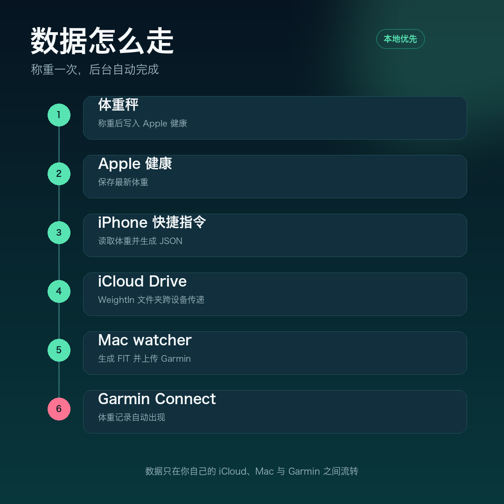
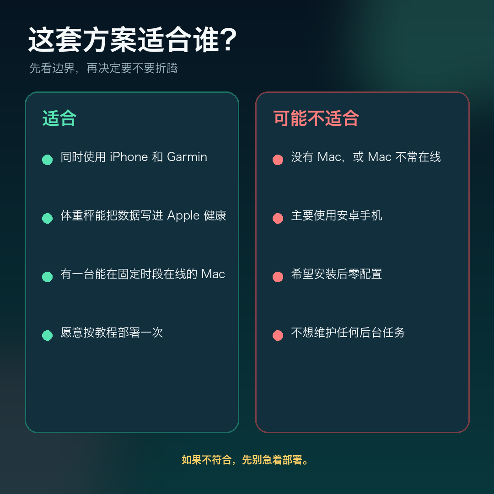
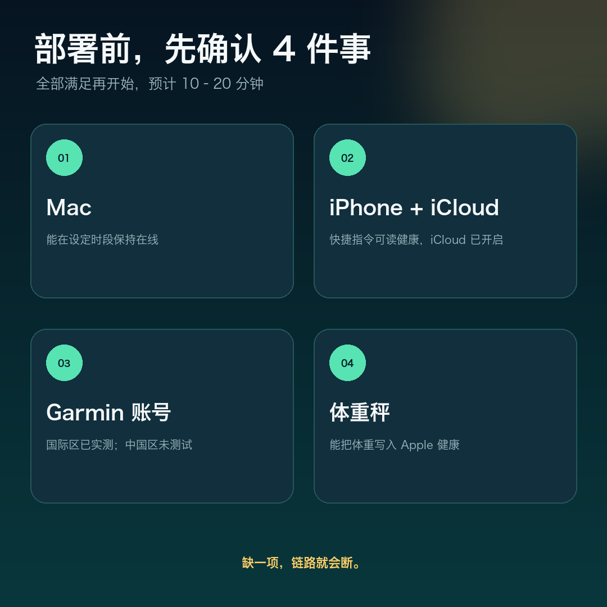
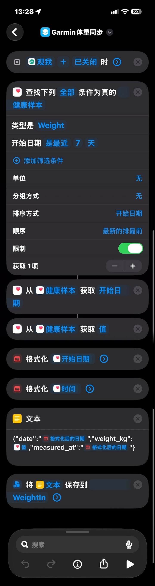

佳明不读苹果健康的体重？我做了个免费开源工具
如果你同时用 iPhone、Apple 健康和 Garmin，可能会遇到一个很割裂的瞬间：
刚刚称完体重，Apple 健康里已经有数据，但 Garmin Connect 里还是空的。
不是秤的问题，也不是 Garmin 没有体重功能，而是这条数据链路没有自动接上。
我做了个小工具：GarminWeightSync4iCloud。它把体重从 Apple 健康自动送到 Garmin Connect，当前版本 v1.0.0，MIT 开源。
现在的流程：称完，关 App，结束
我使用 ScaleMe 和蚂蚁阿福联名秤。称重后，体重会写入 Apple 健康。
接下来的事情由系统自动完成：
体重秤 → Apple 健康 → iPhone 快捷指令 → iCloud Drive → Mac → FIT 文件 → Garmin Connect
我只需要称重，然后关闭 ScaleMe。Mac 会在设定的时间窗口内扫描文件、生成 FIT 并上传；确认成功后，iCloud 里的临时文件也会被删除。

这条链路最重要的两个特点：
- 全程不需要每天手动填数字。
- 数据不经过我的服务器，只在你自己的 iCloud、Apple 设备、Mac 和 Garmin 之间流转。
它不是一个 App，而是一条本地自动化链路
项目由四个部分组成：
watcher.py：扫描 iCloud 中的称重文件，生成 FIT 并上传 Garmin。fit_weight.py：只用 Python 标准库生成 FIT 体重文件。login_once.py：一次性登录 Garmin，缓存 token；密码不落盘。- iPhone 快捷指令：从 Apple 健康读取最新体重，写入 iCloud。
Mac 端通过 launchd 每 60 秒唤醒一次 watcher。默认只在早上 5:00–9:00 和晚上 20:00–22:00 处理，避免 Mac 全天高频率扫描。
同一天、同体重的文件不会重复上传。上传失败会保留源文件，下一轮继续重试。
适合谁，不适合谁
这套方案有明确边界，不是所有人都适合。

如果你同时使用 iPhone 和 Garmin，体重秤能把数据写进 Apple 健康，并且有一台在固定时段在线的 Mac，这套方案会比较顺手。
如果没有 Mac，或者希望安装后完全零配置，它可能不是最合适的选择。
部署前，先确认这 4 件事

第一，Mac 能在设定时段内保持在线。
第二，iPhone 快捷指令有读取 Apple 健康的权限，并且 iCloud Drive 已开启。
第三，你有一个 Garmin Connect 账号。目前实测的是国际区账号，中国区还没有测试。
第四，体重秤能把体重写入 Apple 健康。只要满足这一点，不一定非得使用同款秤。
最短部署路径
完整步骤比较长，这里先给一个最短路径。
第一步，在 Mac 上获取代码并创建虚拟环境：
git clone https://github.com/elingsoft/GarminWeightSync4iCloud.git ~/GarminWeightSync
cd ~/GarminWeightSync
python3 -m venv venv
./venv/bin/pip install garminconnect curl_cffi
第二步，登录一次 Garmin：
GARMIN_EMAIL=你的Garmin邮箱 ./venv/bin/python scripts/login_once.py
密码通过 getpass 输入，不会保存到文件。开启双重验证的账号会再提示输入验证码。
第三步，复制并修改 launchd 模板：
cp ~/GarminWeightSync/scripts/com.user.weighin.plist ~/Library/LaunchAgents/
需要修改 Python 路径、watcher.py 路径、工作目录、日志路径和 GARMIN_EMAIL。模板里的路径是旧目录，不能直接加载。
第四步，按照 README 的说明创建 iPhone 快捷指令，把 JSON 保存到 iCloud Drive 的 WeightIn 文件夹。

这张截图展示的是包含可选 measured_at 字段的版本。iOS 保存文本时可能会自动把 .json 改成 .txt，watcher 两种后缀都接受。
第五步，真实称重一次，检查 Garmin Connect、Logs/weighin.log 和 WeightIn 文件夹。
更完整的命令、排错和配置说明在项目文档里，建议不要只照文章手抄。
我踩过的 5 个坑
第一，iOS 会偷偷补 .txt。 保存文件时，子路径写的是 .json，落盘可能变成 .txt。项目同时接受这两种后缀。
第二，两个“格式化日期”容易选错。 日期和日期时间可能同名，带 T 和时区偏移的那个才是 measured_at 需要的时间。
第三，token 必须显式落盘。 garminconnect 0.3.x 只有在传入 tokenstore 时才会读取和保存 token，裸 login() 只在内存里有效。
第四，iCloud 文件可能还没下载到本地。 文件太新、只有云端占位文件，或者同步延迟，都会让 watcher 暂时跳过。
第五，去重看的是本地账本。 Logs/uploaded.json 记录每个日期的体重；删掉 Garmin 里的记录并不会自动重置账本。想重新测试，需要同时处理账本。
隐私和数据路径
密码只在终端里输入一次，不写入代码、plist 或日志。
Garmin token 保存在 ~/.garminconnect/garmin_tokens.json，权限为 0600。
体重文件通过你自己的 iCloud 账户同步到自己的 Mac，再由 Mac 直接上传 Garmin。项目没有服务端组件。
部署前仍建议检查 .gitignore，不要把 Logs/、venv/、token 文件、真实邮箱或体重数据提交到公开仓库。
它现在还不是什么
它目前只同步体重，不同步体脂、肌肉等指标。
它需要一台在设定时段在线的 Mac，不是纯云端服务。
它不是一个开箱即用的商业 App，需要按教程完成一次部署。
当前代码只根据上传调用是否抛异常判断成功，还没有解析 Garmin 返回里的 detailedImportResult.failures。这是后续需要补上的可靠性缺口。
Garmin 中国区账号还没有测试，国际区账号是当前的主要验证环境。
开源地址
项目已经发布 v1.0.0，采用 MIT 协议：
https://github.com/elingsoft/GarminWeightSync4iCloud
v1.0.0 Release：
https://github.com/elingsoft/GarminWeightSync4iCloud/releases/tag/v1.0.0
公众号回复「体重」，可以获取项目地址、中文 README 和部署文档。
如果你已经在用类似方案，或者有不同品牌的秤和 Garmin 组合，欢迎到 GitHub 提交 Issue，告诉我你的设备组合和遇到的问题。
如果这篇文章帮你少点了几下，也欢迎给项目一个 Star。
项目作者：Zhubao Wang
项目协议：MIT License
说明：本项目为个人开源项目，与 Garmin、Apple 无隶属或官方合作关系。